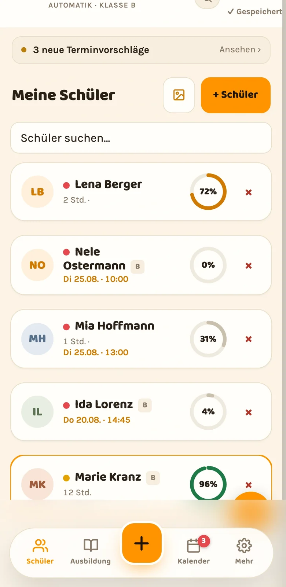

Die Fahrschule läuft auf dem Handy.
Ausbildungsstand, Sonderfahrten und Termine immer aktuell. Erfasst wird direkt nach der Fahrstunde, nicht abends am Schreibtisch.
Im Beta-Betrieb. Zugänge vergeben wir persönlich.

Fachlich zu Ende gedacht.
Nicht eine Karteikarte in digital, sondern die Ausbildung so abgebildet, wie sie abläuft.
-
Eigene Übungen für dein Prüfgebiet
Ergänze die Stellen, an denen es bei euch klemmt: der unübersichtliche Kreisverkehr, die enge Ausfahrt. Die Übungen stehen danach in den Vorlagen deiner Führerscheinklassen.
-
Sonderfahrten zählen sich mit
Überlandfahrt, Autobahnfahrt und Fahrt bei Dunkelheit werden gegen das eingestellte Soll gerechnet. Je Klasse legst du fest, wie viele Unterrichtseinheiten gefordert sind.
-
Prüfungssimulation durchführen
Fahraufgaben und Kompetenzbereiche bewerten wie in der Prüfung, mit laufender Zeit. Fehler, die über mehrere Simulationen wiederkehren, werden eigens ausgewiesen.
-
Nachweise erstellen und unterschreiben
Fahrlehrer und Fahrschüler unterschreiben auf dem Gerät. Der Ausbildungsnachweis entsteht als PDF, das Fahrtenbuch lässt sich als CSV ausgeben.
-
Termine einmal planen, überall sehen
Fahrstunden zentral planen und schreibgeschützt in Apple Kalender, Google Kalender oder Outlook abonnieren.
-
Fahrschüler buchen selbst
Du gibst Zeiten frei und legst Grenzen fest. Deine Fahrschüler wählen in ihrer App einen passenden Termin, bestätigt wird von dir.
Allindrive in der Praxis.
Zwölf Ansichten aus der laufenden App. Scrolle, und der Bildschirm wandert mit. Die Namen darin sind erfunden, die Oberfläche ist es nicht.
01 / 12
Alle Fahrschüler
Wer wie weit ist, auf einen Blick.
02 / 12
Der Morgen
Termine, Hinweise und offene Anfragen.
03 / 12
Digitale ADK
Alle Abschnitte mit Fortschritt.
04 / 12
Übung für Übung
Abhaken, bewerten, Notiz dazu.
05 / 12
Die Woche
Sechs Tagesspalten, Konflikte markiert.
06 / 12
Der Tag
Fahrlehrer, Fahrschüler und Fahrzeug.
07 / 12
Gefahrene Strecke
Per GPS mitgeschrieben.
08 / 12
Prüfungssimulation
Fahraufgaben und Kompetenzbereiche.
09 / 12
Fuhrpark
Kilometerstand und HU-Countdown.
10 / 12
Tagesabschluss
Was heute lief, was morgen ansteht.
11 / 12
Fahrschüler-App
Fortschritt und nächster Termin.
12 / 12
Selbst buchen
Freie Zeiten, ohne Anruf.
startseite.webp Aufnahme folgt
adk.webp Aufnahme folgt
adk-uebungen.webp Aufnahme folgt
kalender-woche.webp Aufnahme folgt
kalender-tag.webp Aufnahme folgt
fahrstunde-karte.webp Aufnahme folgt
pruefungssimulation.webp Aufnahme folgt
fahrzeuge.webp Aufnahme folgt
tagesabschluss.webp Aufnahme folgt
schueler-app.webp Aufnahme folgt
buchung.webp
Freie Zeiten einstellen. Fahrschüler buchen selbst.
Jeder Fahrlehrer gibt seine Zeiten frei. Allindrive zeigt dem Fahrschüler nur, was wirklich passt, und trägt die bestätigte Buchung in den Kalender ein.
-
Zeiten freigeben
Wiederkehrend als Terminserie oder nur an einzelnen Tagen. Urlaub und sonstige Tätigkeiten blocken automatisch.
-
Passende Termine anzeigen
Nur wenn Fahrlehrer, Fahrschüler und Fahrzeug frei sind und das Tageslimit es zulässt.
-
Bestätigen oder gegenvorschlagen
Du bestätigst mit einem Tipp, lehnst ab oder schickst einen anderen Termin zurück.
Alle Fahrlehrer und Termine in einem Kalender.
Startzeit, Dauer, Fahrschüler und Fahrzeug stehen am Termin. Allindrive erkennt Überschneidungen bei Fahrlehrern, Fahrschülern und Fahrzeugen und meldet sie vor dem Speichern. Der Kalender lässt sich zusätzlich abonnieren.

Das Kalender-Abo für Apple Kalender, Google Kalender und Outlook ist schreibgeschützt und jederzeit widerrufbar.
Sonderfahrten werden mitgerechnet.
Allindrive zählt die dokumentierten Fahrten je Art zusammen und stellt sie dem Soll gegenüber, das du für die Führerscheinklasse eingestellt hast. Am Fahrschüler steht damit jederzeit, was noch aussteht, ohne dass jemand nachrechnet.
Digitale ADK im Detail-
Überlandfahrten 5 / 5 UE
-
Autobahnfahrten 3 / 4 UE
-
Fahrten bei Dunkelheit 1 / 3 UE
Beispiel Klasse B. Eine Unterrichtseinheit sind 45 Minuten. Das Soll je Klasse stellst du selbst ein.
Bis zur Prüfung nachvollziehbar.
-
Ausbildungsnachweis direkt unterschreiben
Der Fahrschüler unterschreibt auf dem Gerät. Eine nachträgliche Korrektur aktualisiert den vorhandenen Nachweis, die Unterschrift bleibt erhalten.
-
Prüfungsreife als Rechnung, nicht als Gefühl
Pflichtstunden, Sonderfahrten und Bewertungen ergeben zusammen die Ampel. Was noch fehlt, steht daneben.
-
Wiederkehrende Fehler sichtbar machen
Über mehrere Prüfungssimulationen hinweg zeigt Allindrive, welche Fahraufgabe immer wieder auffällt.
-
Schaltkompetenz nach B197
Die Testfahrt wird eigens erfasst und als PDF ausgegeben, getrennt vom übrigen Ausbildungsnachweis.
-
Erfolgsquoten nach Klasse und Zeitraum
Der Quotenpilot rechnet aus, was dokumentiert wurde: bestandene und nicht bestandene Versuche, nach Klasse, Zeitraum und Fahrlehrer.
-
Strecken statt Straßennamen im Notizbuch
Die gefahrene Strecke wird per GPS mitgeschrieben, schwierige Stellen bekommen einen Pin auf der Karte.

Derselbe Stand auf jedem Gerät. Vertretungen sehen, wo zuletzt aufgehört wurde.
Deine Fahrschüler haben eine eigene App.
Fortschritt, Sonderfahrten, nächste Termine, die aufgezeichneten Strecken, Lernvideos deiner Fahrschule und die Begleitfahrten nach BF17. Das meiste, wofür sonst angerufen wird, steht dort.
- Native App für iPhone und Android, dazu der Zugang im Browser ohne Installation
- Deutsch, Englisch, Türkisch und Russisch, umschaltbar vom Fahrschüler selbst
- Eigener Zugang für Eltern und Kostenträger, getrennt vom Zugang des Fahrschülers
Was untergeht, meldet sich von selbst.
Der Fahrlehrer sieht morgens, was ansteht, und abends, was liegen geblieben ist. Dazwischen muss niemand nachsehen.

-
Lange nicht gefahren
Wer seit Wochen keinen Termin hatte, steht oben. Ein Tipp, und die Nachricht ist geschrieben.
-
Fristen-Radar
Hauptuntersuchung, Aufbewahrungsfristen nach § 31 FahrlG und fällige Unterlagen, solange noch Zeit ist.
-
Abbruch-Risiko
Wenn ein Fahrschüler stehen bleibt, fällt das auf, bevor er ganz weg ist.
-
Tagesabschluss
Am Abend in einer Ansicht: was dokumentiert wurde, was fehlt, was morgen ansteht.
Wofür Allindrive nicht gemacht ist.
Damit du nicht erst nach zwei Wochen merkst, dass etwas fehlt.
-
Buchhaltung
Allindrive führt die Ausbildung und den Betrieb, nicht die Bücher. Wer vor allem eine Abrechnungslösung sucht, ist hier falsch.
-
Theorieunterricht
Für das Lernen der Theoriefragen gibt es eigene Anbieter mit Lizenz am amtlichen Fragenkatalog. Allindrive ersetzt sie nicht.
-
Ein fertiges Produkt
Allindrive ist im Beta-Betrieb. Es kommen Funktionen dazu, und es treten Fehler auf. Wer ein abgeschlossenes Programm erwartet, sollte noch warten.
-
Große Fahrschulen mit eigener IT
Es gibt keine Schnittstelle zu Fremdsystemen und keinen Betrieb auf eigenen Servern.
Was es kostet.
Es gibt noch keine Preisliste, und das hat einen Grund: Allindrive ist im Beta-Betrieb.
Wir vergeben die Zugänge einzeln und besprechen den Preis im Gespräch. So wissen wir, mit welchen Führerscheinklassen und wie vielen Fahrlehrern du arbeitest, und du weißt, worauf du dich einlässt. Im Beta-Zugang ist der komplette Funktionsumfang enthalten.
- Bemessen wird später nach Anzahl der Fahrlehrer, Führerscheinklassen und Standorten
- Deine Daten kannst du jederzeit als Sicherung herunterladen
- Was noch nicht fertig ist, sagen wir vorher, nicht hinterher
Häufige Fragen.
Läuft Allindrive auch ohne Installation?
Ja. Allindrive läuft im Browser auf Rechner, Tablet und Handy und lässt sich als App auf den Startbildschirm legen. Zusätzlich gibt es native Apps für iPhone und Android, je eine für Fahrlehrer und für Fahrschüler.
Können mehrere Fahrlehrer gleichzeitig arbeiten?
Ja. Fahrschüler, Kalender und Fahrzeuge gehören der Fahrschule, nicht dem einzelnen Gerät. Neue Fahrlehrer kommen über einen Einladungscode dazu; wer welche Rechte hat, legt der Fahrschul-Admin fest.
Was passiert mit meinen Papier-ADKs?
Du fotografierst sie. Die KI-Funktion liest die abgehakten Übungen aus dem Foto aus und überträgt sie auf die digitale Karte. Was sie erkannt hat, wird dir vor dem Speichern angezeigt.
Zählt Allindrive die Sonderfahrten automatisch mit?
Ja. Die dokumentierten Fahrten werden je Art zusammengezählt und gegen das Soll gestellt, das du für die Führerscheinklasse eingestellt hast. Am Fahrschüler siehst du auf einen Blick, was noch aussteht.
Was kostet Allindrive?
Allindrive ist im Beta-Betrieb. Wir vergeben Zugänge persönlich und besprechen den Preis dabei direkt, damit klar ist, mit welchen Klassen und wie vielen Fahrlehrern du arbeitest. Mehr dazu auf der Preisseite.
Führ deine nächste ADK digital.
Leg deine Fahrschule an, trag deine Fahrzeuge ein, dokumentiere die nächsten Fahrstunden darin. Danach weißt du, ob es zu deinem Alltag passt. Das lässt sich nicht auf einer Website entscheiden.